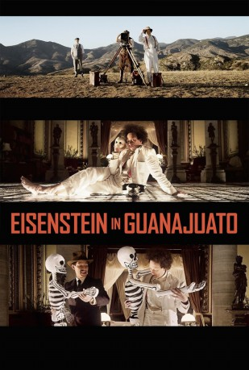

#5442 Eisenstein in Guanajuato
 
 IMDB-Wertung: 6.4 / 10
IMDB-Wertung: 6.4 / 10  Metascore: 0
Metascore: 0 
The venerated filmmaker Eisenstein is comparable in talent, insight and wisdom, with the likes of Shakespeare or Beethoven; there are few - if any - directors who can be elevated to such heights. On the back of his revolutionary film Battleship Potemkin, he was celebrated around the world, and invited to the US. Ultimately rejected by Hollywood and maliciously maligned by conservative Americans, Eisenstein traveled to Mexico in 1931 to consider a film privately funded by American pro-Communist sympathizers, headed by the American writer Upton Sinclair. Eisenstein's sensual Mexican experience appears to have been pivotal in his life and film career - a significant hinge between the early successes of Strike, Battleship Potemkin, and October, which made him a world-renowned figure, and his hesitant later career with Alexander Nevsky, Ivan the Terrible and The Boyar's Plot.
Jahr: 2015
Dauer: 101 Minuten
FSK: 16
Land: Niederlande Studio: Edition SalzgeberTonspuren: DD5.1 - ,
Untertitel: Deutsch, Englisch,
Auflösung: 1080p (1920x808) Größe: 9226 MB
Genre: Drama, Komödie, Liebe, Biographie
Regisseur: Peter Greenaway
Drehbuch: Fibe Ma
Soundtrack:
Darsteller:
- Elmer Bäck als Sergei Eisenstein
- Luis Alberti als Palomino Cañedo
 Stelio Savante als Hunter S. Kimbrough
Stelio Savante als Hunter S. Kimbrough- Silverio Palacios als Graveyard Scene
- Alan Del Castillo als
- Roscoe 'Fatty' Arbuckle als Himself , archive footage, uncredited
- Buster Keaton als Himself , archive footage, uncredited
- José Montini als Diego Rivera
- Cristina Velasco Lozano als Frida Kahlo
- Rasmus Slätis als Grisha Alexandrov
- Jakob Öhrman als Eduard Tisse
- Sara Juárez als Mercedes
- Alaín Vargas als Gideon
 Maya Zapata als Concepción Cañedo
Maya Zapata als Concepción Cañedo- Gustavo Galván als Rolando
- Emiliano Morales als Pascal
- Anna Knaifel als Pera
- Alenka Rios als Alba
- Lisa Owen als Mary Craig Sinclair
- César Fonseca als Bodyguard 1
- Paris Santibánez als Bodyguard 2
- Idalí Soto als Respectable Woman
- Cristina Gilés als Whore
- Diego Gálvez als Blackmailer 1
- Ricardo Zarraga als Blackmailer 2
- Alejandro Salmán als Visa Official
- Irving Hernandez als Camorrista 1
- Humberto Granados als Camorrista 2
- Mario Robles als Camorrista 3
- Patrik Sigmundt als Camorrista 4
- Esteban Cansaya als Camorrista 5
- María Gálvez als Graveyard Scene
- Mika Ainola als Eisensteins Fathers Scene
- Leo Idman als Eisensteins Fathers Scene
- Timo Jaatinen als Eisensteins Fathers Scene
- Markku Jokelainen als Eisensteins Fathers Scene
- Pertti Kiiveri als Eisensteins Fathers Scene
- Heikki Peltonen als Eisensteins Fathers Scene
- Raino Ranta als Meierhold
- Harry Viita als Eisensteins Fathers Scene
- Mauro González als
Datei: X:\2015(A-F)\Eisenstein in Guanajuato (2015, FSK16, 1920x808).mkv seit 31.01.2017
Festplatte: HD 2015(A-Z)
 Es gibt insgesamt 143 Filme in der Gruppe '2015(A-F)'
Es gibt insgesamt 143 Filme in der Gruppe '2015(A-F)'